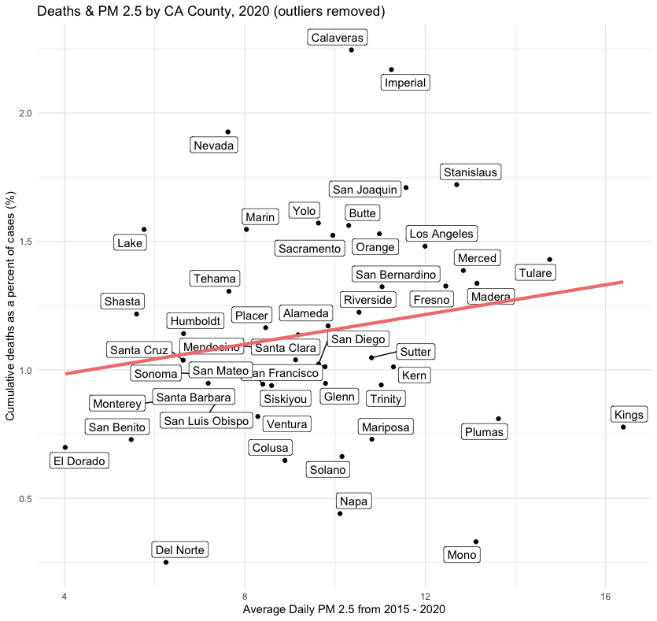
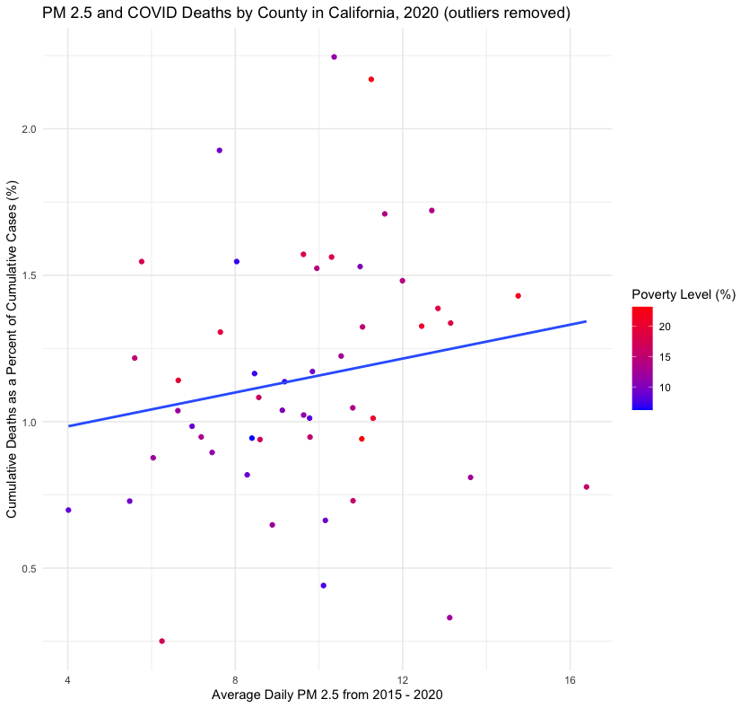
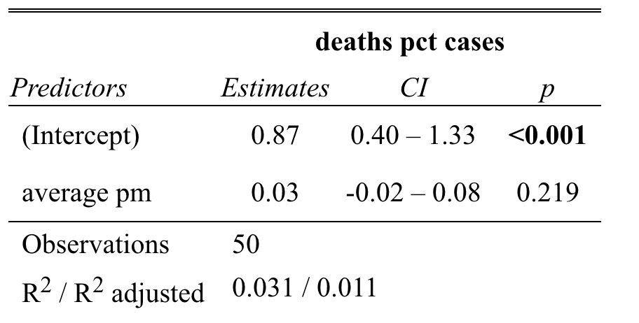
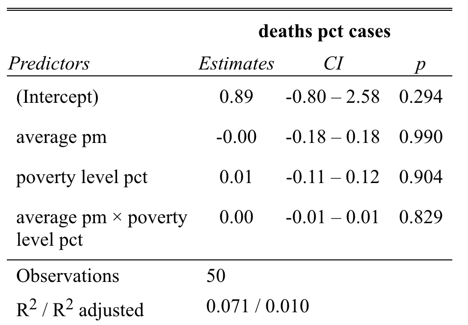

Air Quality and COVID-19 Mortality in California
Introduction
Air pollution is now considered the largest environmental health threat. Of all of the common pollutants, PM2.5 has an especially severe impact on human health due to it’s ability to affect both the respiratory and vascular systems(“Air Pollution and Health,” n.d.). PM2.5 is mainly produced by the combustion of fuels and wood. Exposure to PM2.5 can exacerbate heart and lung diseases, which are both known risk factors for negative outcomes from COVID-19(Kinney 2008).
A 2020 study on county-level COVID-19 mortality across the United States found a statistically significant relationship between air pollution exposure and COVID-19 death rates. This study provided strong evidence for area-level determinants of negative health outcomes. While this cannot inform individual outcomes, this research can be used to inform policy decisions in the United States.(Wu 2020a)
As wildfires become more frequent in the west, Californians are exposed to much higher levels of pollutants, specifically PM2.5. This places Californians at a now greater risk for negative health outcomes from respiratory illness. In this project, I will study the effects of PM2.5 exposure on COVID-19 mortality across 52 counties in California in 2020. This will help us understand what areas are at the greatest risk for negative health outcomes, therefore informing resource allocations and preparation plans for future pandemics.
Data
COVID-19 Data
I accessed COVID-19 data from the California Open Data Portal, specifically the COVID-19 Time-Series Metrics by County and State. This source provides daily county-level counts on cases, deaths, and tests from February 1, 2020 to present. The data comes from the California COVID-19 Dashboard, which provides the most comprehensive data on reported COVID-19 cases in California. That being said, many COVID-19 cases went unreported (asymptomatic cases, cases without a positive test) and thus would not be included in this data set.
Air Quality Data
I accessed air quality data from the US EPA Outdoor Air Quality Data portal. This source provides air quality data from Air Quality System (AQS) and AirNow (when AQS data is not available). AQS tracks data from thousands of monitors across the United States. It provides Daily Mean PM2.5 Concentrations and Daily AQI Values from each monitor. Within California, there are 151 unique air monitoring stations across 52 counties in California- not every county has an air quality monitoring station.
Poverty Data
I accessed poverty data from the United States Census Bureau on Poverty Status in the Past 12 Months in 2020. This data is the most comprehensive data available on poverty rates at the county level in California. The data set provides 5-year estimates on poverty status by age, race, education, and employment.
Analysis
I will start by fitting a linear regression model for COVID-19 mortality with a single predictor indicating the county’s 6-year mean PM2.5 concentrations to examine the relationship between PM2.5 and COVID-19 mortality on a county-level scale.
\[Deaths_i =\beta_{0}+\beta_{1} \cdot PM2.5_i+\varepsilon_i\]
For the values for COVID-19 mortality, I’m choosing to study cumulative deaths in 2020 as a percent of cumulative cases in 2020 in each county: (Cumulative Deaths / Cumulative Cases) * 100%. This allows us to compare COVID-19 mortality rates in counties with varying populations. Since this data is from 2020, I assume that members of the population being studied are not vaccinated against COVID-19. I will remove two outliers: Inyo County and Alpine County. Inyo County had extremely high COVID mortality (~3%), and Alpine County had extremely low COVID mortality (0%).
For the PM2.5 values, I will be using the average of the daily PM2.5 values between February 2020 and December 2020. The county PM2.5 values are the averages of all stations in that county.
This linear regression model with a single predictor does not account for the numerous other influences on COVID-19 mortality and air quality, so we cannot draw strong conclusions from this basic model.
One obvious confounding variable in this analysis is poverty. To account for this, I will also perform a multiple linear regression with interactions.
\[Deaths_i=\beta_{0}+\beta_{1} \cdot Poverty_i + \beta_{2} \cdot PM2.5_i + \beta_{3} \cdot Poverty_i \cdot PM2.5_i + \varepsilon_i\]
Since poverty is likely to impact both COVID-19 mortality and one’s exposure to poor air quality, I will include poverty in this model. The poverty values are county-scale poverty rates (%).
Results
Models
Simple Linear Regression Model \[Deaths_i =\beta_{0}+\beta_{1} \cdot PM2.5_i+\varepsilon_i\]
Interaction Model \[Deaths_i=\beta_{0}+\beta_{1} \cdot Poverty_i + \beta_{2} \cdot PM2.5_i + \beta_{3} \cdot Poverty_i \cdot PM2.5_i + \varepsilon_i\]
Plots


Residuals
Simple Linear Regression Model
| Min | Q1 | Median | Q3 | Max |
|---|---|---|---|---|
| -0.91711 | -0.20024 | -0.02783 | 0.20909 | 1.07737 |
The median value suggests that the model generally predicts slightly lower values for COVID-19 deaths as a percent of cases than observed (-0.02783%). The relatively large maximum and minimum values indicate that some observed values are more than a full percent off from the model (1.07737%).
Interaction Model
| Min | Q1 | Median | Q3 | Max |
|---|---|---|---|---|
| -0.88871 | -0.24042 | -0.02951 | 0.15008 | 1.13647 |
The median value suggests that the model generally predicts slightly lower values for COVID-19 deaths as a percent of cases than observed (-0.02951%). The relatively large maximum and minimum values indicate that some observed values are a full percent off from the model (1.13647%).
Coefficients
Simple Linear Regression lm() Output

The intercept 0.87 states that, according to this model, if PM2.5 was 0, we would expect cumulative deaths in 2020 to be 0.87% of cumulative cases in 2020 on average.
According to this model, for every 1 microgram / m3 increase in PM2.5, we would expect cumulative deaths as a percent of cumulative cases in 2020 to increase by 0.03%. This value is relatively low, indicating that changes in PM2.5 have a small effect on COVID-19 mortality on the county scale.
Interaction Model lm() Output

The intercept 0.87 states that, according to this model, if the PM2.5 concentration and the poverty rate were both 0, we would expect cumulative deaths in 2020 to be 0.89% of cumulative cases in 2020 on average.
According to this model, for every 1 microgram / m3 increase in PM2.5, when the poverty rate is 0%, we would expect cumulative deaths as a percent of cumulative cases in 2020 to neither increase nor decrease. This value indicates that changes in PM2.5 have little effect on COVID-19 mortality on the county scale.
Additionally, for every 1% increase in the poverty rate when PM2.5 is 0 micrograms / m3, we expect cumulative deaths as a percent of cumulative cases in 2020 to increase by 0.01%. This indicates that increases in poverty rates slightly increase COVID-19 mortality rates on the county scale.
The effect of PM2.5 on COVID-19 mortality increases by 0.001% for every percent increase in poverty rates (not shown in table due to rounding). This indicates that on this scale, PM2.5 and poverty rates have minimal interaction.
The p-value
The p-value is an indication of the likelihood that the coefficient estimates from our model differ from 0 purely by chance. A low p-value would indicate that there is a low chance that we would see our estimated coefficient value if the true value of that coefficient was 0. If the p-value is below 0.05, we can reject the null hypothesis: air quality (and poverty for our second model) have no effect on COVID-19 mortality.
Simple Linear Regression Model
The p-value for our simple linear regression model was 0.2189. Since this is greater than 0.05, we fail to reject our null hypothesis. Using this model, there is not sufficient evidence to conclude that there is a relationship between particulate matter and COVID-19 mortality.
Interaction Model
The p-value for our interaction model was 0.333, Since this is greater than 0.05, we fail to reject our null hypothesis. Using this model, there is not sufficient evidence to conclude that there is a relationship between particulate matter, poverty, and COVID-19 mortality.
R-Squared
Simple Linear Regression Model
The Multiple R-Squared value for this model was 0.03132. This indicates that this model does not fit the data very well.
Interaction Model
The Adjusted R-Squared value for this model was 0.01006. This indicates that this model does not fit the data very well.
Confidence Interval
When the sampling distribution of a point estimate can be modeled as normal, the point estimate we observe will be within 1.96 standard errors of the true value of interest about 95% of the time.
Simple Linear Regression Model - 95% confidence intervals for all point estimates
| Intercept | Average PM 2.5 (B1) |
|---|---|
| 0.4, 1.33 | -0.02, 0.08 |
We can be 95% confident that the interval between 0.4% and 1.33% captures the true value of the intercept— the value of COVID deaths as a percent of cases when the concentration of PM 2.5 is 0 micrograms / cubic meter.
We can also be 95% confident that the interval between -0.02% and 0.08% captures the true value of B1 — the percent change in COVID deaths as a percent of cases that a 1 unit increase in PM 2.5 will cause.
Interaction Model - 95% confidence intervals for all point estimates
| Intercept | Average PM2.5 (B1) | Poverty Level (B2) | Average PM : Poverty Level (B3) |
|---|---|---|---|
| -0.8, 2.58 | -0.18, 0.18 | -0.11, 0.12 | -0.01, 0.01 |
Again, for the interaction model, we can be 95% confident that the intervals in the table above contain the true values for each of our point estimates.
B1, B2, and B3 indicate that our model is quite unsure of the effects that each variable will have on COVID mortality.
Further Research
There was a very similar study done by researchers at the Harvard T.H. Chan School of Public Health(Wu 2020b) which examined the relationship between PM 2.5 and COVID-19 mortality rates across counties in the United States. They found that an increase of PM 2.5 by 1 microgram per cubic meter was associated with an 11% increase in COVID-19 mortality in that county. This research involved accounting for many different confounding variables that could affect COVID-19 mortality rates.
To more rigorously analyze PM 2.5’s relationship with COVID-19 mortality in California, I would account for additional variables such as other county level health metrics, number of hospital beds, and other environmental factors that could influence air quality. I would also consider studying city- or ZIP code- level data to achieve a higher spatial resolution.
While area-level data can not be used to determine outcomes for individual patients, a more rigorous analysis would be able to inform policy decisions in local governments and resource allocations.
References
Citation
@online{allison2022,
author = {Jillian Allison},
title = {Air {Quality} and {COVID-19} {Mortality} in {California}},
date = {2022-12-05},
url = {https://jilliannallison.github.io/posts/2022-12-05-covid-air-quality},
langid = {en}
}